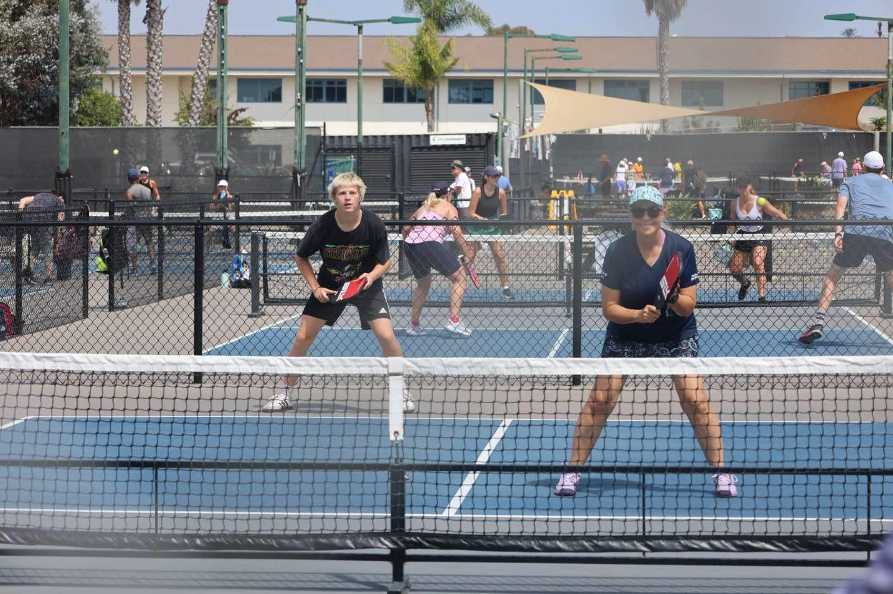
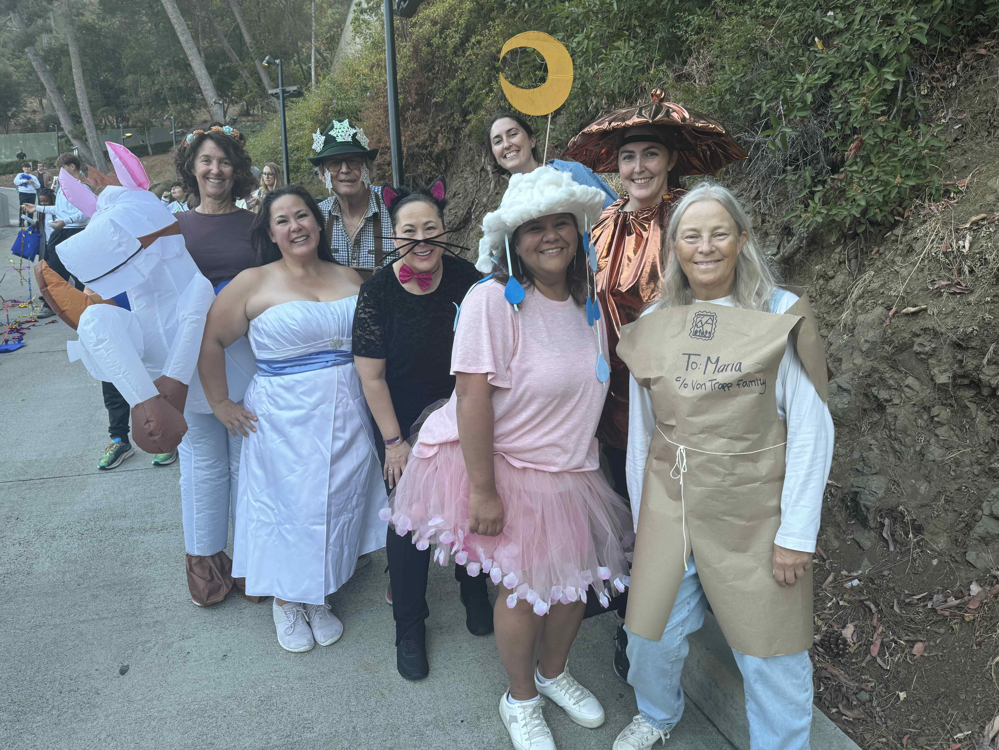
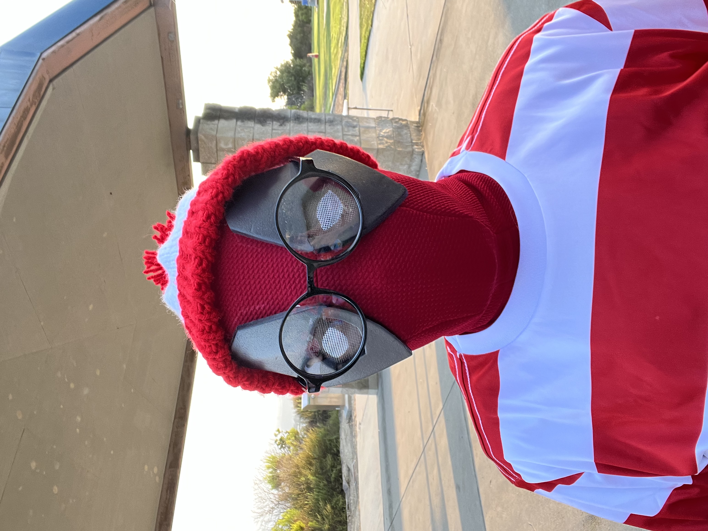
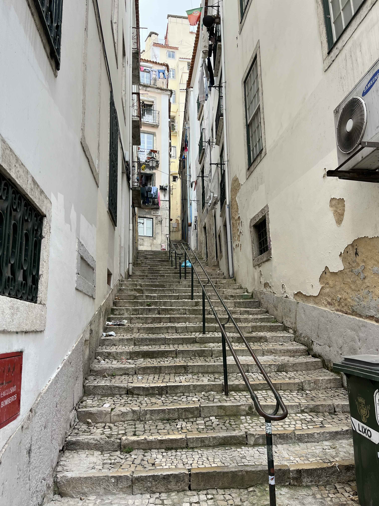
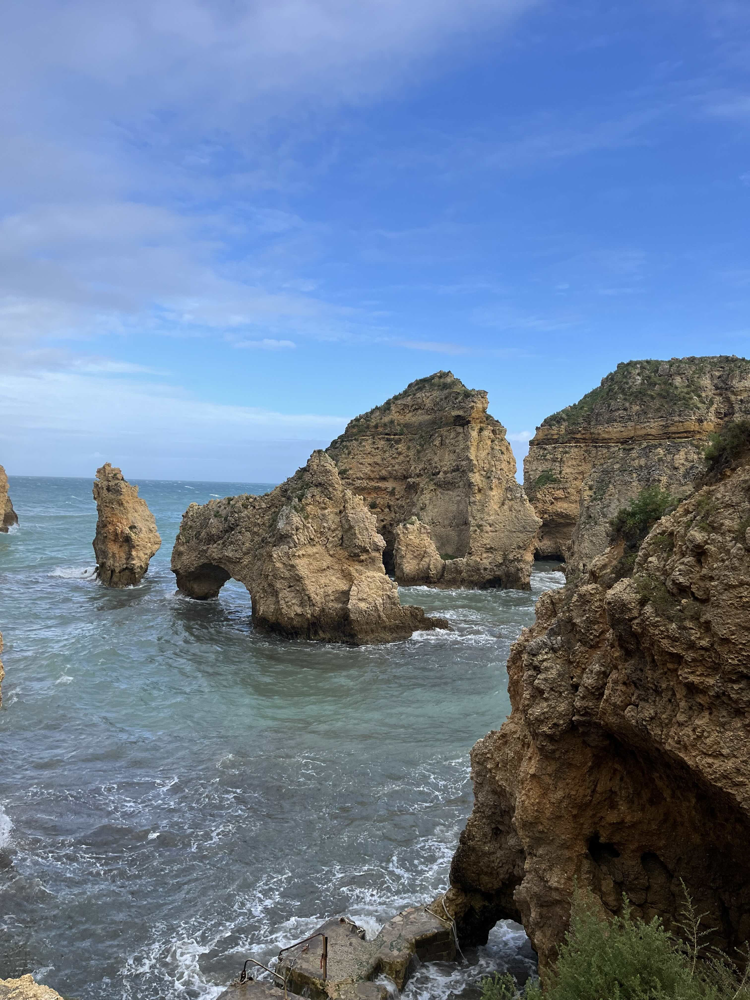
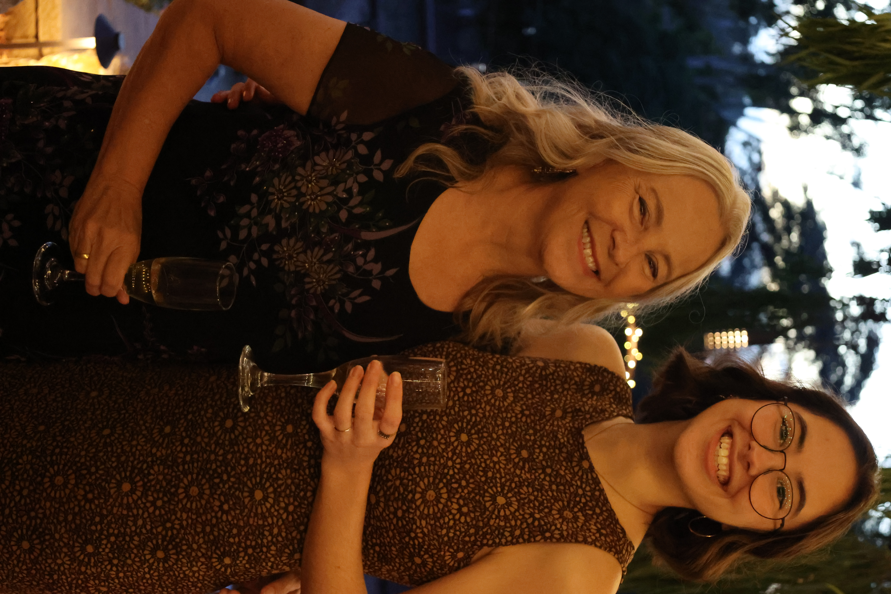
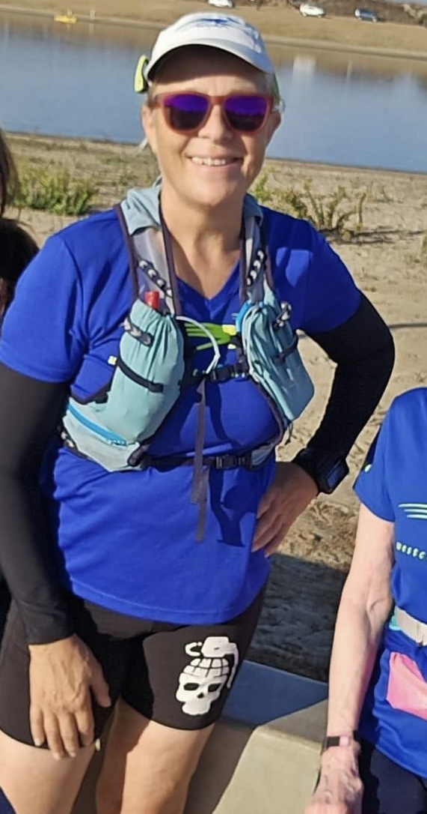
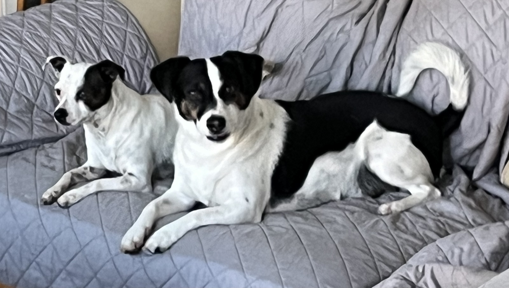

<!DOCTYPE html>
<html>
<head>
	<title></title>
</head>
<body style="cursor: auto;">&nbsp;</body>
</html>
<title></title>
<meta http-equiv="Content-Type" content="text/html; charset=utf-8"><meta name="viewport" content="width=device-width, initial-scale=1">


<table border="0" cellpadding="0" cellspacing="0" style="border-collapse:collapse;border:none">
	<tbody>
		<tr style="page-break-inside:avoid">
			<td width="33%">
			    
			    <p align="center" style="text-align:center"><span style="font-size:10.0pt;font-family:Zapfino">Season&#39;s Greetings from San Diego, December 2024</span></p>
			    
			<p style="margin-left:10.0pt"><span style="font-size:12.0pt;font-family:&quot;Tekton Pro&quot;">A big decision for me this year was to stop participating in Irish dance. I have enjoyed many years of learning dances and traveling to competitions&nbsp;but for whatever reason, the joy was no longer there for me and I have to say that I have had no subsequent&nbsp;regrets. I have fortunately been able to stay in touch with the majority of the dear friends I made through Irish dance and for that&nbsp;I am very grateful.</span></p>

			<p align="center" style="margin-top:6.0pt; text-align:center"></p>

			<p style="margin-left:10.0pt">
			<span style="font-size:12.0pt;font-family:&quot;Tekton Pro&quot;">Leaving the world of Irish dance presented me with&nbsp;much extra free time (and money) so I decided to try my hand at playing pickleball. This is a very popular pasttime here in San Diego and our climate allows us to play outside all year round. I found a club close to the ocean and near where I work and am having such a fun time meeting new people and learning a new sport. To make things even better, a number of my friends from Irish dance and running&nbsp;have also started to play, which just adds to the appeal.</span>
			
			</p>
			<p align="center" style="margin-top:6.0pt; text-align:center"></p>
			
			<p style="margin-left:10.0pt">
			<span style="font-family: &quot;Tekton Pro&quot;; font-size: 16px;">I really wanted to revisit the Hollywood Bowl and a group of us traveled up there for a sing-along Sound of Music event. We dressed up as &quot;a few of my favorite things&quot; and the other people in the audience loved our costumes! Lauren even hooked up a small smoke machine to her bright copper kettle spout which alarmed the security personnel who thought she was vaping! All the costumed audience members got to go up on the stage for a parade before the show and the whole evening was a lot of fun.&nbsp;
			</p>
			</td>
			<td width="33%">
			 <p style="margin-left:10.0pt">
			< style="margin-left:10.0pt"><span style="font-size:12.0pt;font-family:&quot;Tekton Pro&quot;">
			Another stage-related experience this year was a third (for me) <a href="https://www.youtube.com/watch?v=Rl5oypbfhhU">Comic-Con Masquerade</a> performance. This was thanks to my talented friends who created a Deadpool and Wolverine based skit since the movie had just premiered. We were all dressed as Deadpool variants (black/red/white costumes with Deadpool masks). I was Waldo (Wally if you are in the UK) and Lisa was a Bridgerton-esque character. We had a blast and we also won the Most Humorous trophy and the Alan Campbell Best Comic Book Recreation industry awards!
			</span></p>

			<p align="center" style="margin-top:6.0pt;text-align:center"> </p>

		<p style="margin-left:10.0pt">
			<span style="font-size:12.0pt;font-family:&quot;Tekton Pro&quot;">During my school Spring break I traveled to Portugal and Spain with a group of friends. The trip began with 4 of us in Lisbon. We then rented a car and drove to the Algarve. From there we drove to Seville where we caught a flight to Barcelona. In Barcelona, we were joined by 3 more friends and we made Barcelona our base for a week of sight-seeing. I had never been to Portugal or Spain and I had a wonderful time. I would love to return to see more of both countries as I feel I merely dipped my toe in what they have to offer. Selecting a few photos for this letter was so hard to do!</span></p>
			<p align="center" style="margin-top:6.0pt;text-align:center">
			     
			     
			     
			</p>
		
<p style="margin-left:10.0pt">
			<span style="font-size:12.0pt;font-family:&quot;Tekton Pro&quot;">My good friends, Jessica and Lauren, introduced me to the wonderful world of speakeasies this year. I had heard of them but just thought they were bars with specific decor. I have loved exploring the local speakeasies and their creative variety of secret entrances and tasty cocktail concoctions. We visited&nbsp;a few cool ones&nbsp;in Barcelona!</span></p>
			
			</td>
			<td width="33%">
			    <p style="margin-left:10.0pt">
			<span style="font-size:12.0pt;font-family:&quot;Tekton Pro&quot;">Lisa is still living with me in San Diego (yay)&nbsp;and enrolled in San Marcos University&#39;s teaching program in the summer. She is currently student teaching for a middle school history teacher&nbsp;as part of the course requirements and will soon move to a high school for the next part of the program. She hopes to graduate next year and with luck will get a classroom of her own shortly afterwards.</span>
			
			<span style="font-family: &quot;Tekton Pro&quot;; font-size: 16px;">Happily, I was retained by my school for the 2024-25 school year and I still love teaching there</span><span style="font-family: &quot;Tekton Pro&quot;; font-size: 16px;">. This is my last probationary year and I am keeping my fingers crossed that I will be offered a permanent contract next year since retirement is still a few years away.</span></p>
			
			<p align="center" style="margin-top:6.0pt;text-align:center"> </p>
			<p style="margin-left:10.0pt"><span style="font-size:12.0pt;font-family:&quot;Tekton Pro&quot;">I continue to run with West Coast Roadrunners, but have cut back on the number of races that I enter. Now I just show up on (most) Saturday mornings to run by the beautiful Pacific Ocean with the lovely friends who I have met through this club.</span></p>

			

			

			<p align="center" style="margin-top:6.0pt;text-align:center"> </p>

			<p style="margin-left:10.0pt"><span style="font-size:12.0pt;font-family:&quot;Tekton Pro&quot;">I still have 2 crazy dogs that keep me walking every day and they are still prone to digging and chewing as their primary sources of entertainment. </span></p>

			<p style="margin-left:10.0pt"><span style="font-size:12.0pt;font-family:&quot;Tekton Pro&quot;">All in all, it has been a good year! Great friends, fun times, a rewarding job, and a healthy happy life!</span></p>


			<p align="center" style="margin-bottom:6.0pt;text-align:center"><span style="font-size:10.0pt;font-family:Zapfino">Wishing you all a very happy holiday season!
			Love, Jackie</span></p>

			<p align="center" style="margin-top:6.0pt; text-align:center"></p>
			</td>
		</tr>
	</tbody>
</table>
